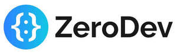

Trade Mark Journal No.2025/043 24 October 2025
UK00004278743 15 October 2025 (9,42)

- Class 9
- Downloadable computer software development tools; downloadable computer software for application and database integration; downloadable computer software for blockchain technology; software for creating, selling, buying, trading, owning, storing, and managing cryptocurrency, digital media, digital goods, and data; software for managing and verifying cryptocurrency, digital media, and digital goods transactions using blockchain technology; software which features technology that enables users to transfer and receive financial payments; software for payment and exchange transactions involving cryptocurrencies; software for use with blockchain-based platforms; software for implementing, recording, tracking, analyzing, settling, monitoring, processing, facilitating, verifying, validating, and authenticating payments and transactions; software for managing, recording, and executing transactions and smart contracts using blockchain technology in the field of block chain; software for storing, managing, and tracking electronic data in the field of decentralized web software protocols; distributed ledger platform software, namely, software for recording, verifying, monitoring, executing, and tracking electronic transactions using distributed ledger technology (dlt); software for creating, managing, modifying, and hosting distributed applications; software for encrypting and enabling secure transmission of digital information over the internet; software for the management of cryptographic security of electronic transmissions across computer networks; software for creating and management of smart contracts; software for accessing and interacting with blockchain-based platforms; software for creating and interacting with blockchains; software for recording, processing, storing, analyzing and managing data and information; software for managing, storing, creating, analyzing, accepting, buying, selling, accessing, transmitting, trading, auctioning, viewing, transferring, transacting, exchanging, validating, and verifying cryptocurrency, digital currency, virtual currency, non-fungible tokens, crypto collectibles, digital collectibles, digital art, utility tokens, crypto tokens, digital and blockchain assets, digitized assets, and other application tokens; software for implementing, recording, tracking, analyzing, settling, monitoring, managing, processing, facilitating, verifying, validating, and authenticating payments and transactions; software for creating accounts and maintaining and managing information about financial transactions on distributed ledgers and peer to peer payment networks; software for enabling, managing, recording, verifying, and monitoring electronic funds transfer; software for use as a digital wallet and cryptocurrency wallet; software for currency conversion; software for use as an electronic wallet; software for enabling, managing, recording, and verifying financial transactions in financial trading and financial exchange; software for accessing and sharing financial information; software for maintaining ledgers for financial transactions; software for enabling, managing, recording, and verifying financial transactions in an electronic financial platform.
- Class 42
- Computer programming and computer software design services, namely, design, development, and implementation of software for hierarchical deterministic multisignature (HDM) wallets and third party verification services for blockchain and cryptocurrency transactions; Design, development, and implementation of software for Hierarchical Deterministic Multisignature (HDM) wallets and third party verification services for digital currency transactions, in particular, transactions involving bitcoin currency; Computer services, namely, data encryption services for providing security and anonymity for electronic transactions; Providing online non-downloadable software for use in electronically buying, selling, and accessing digital currency, and managing digital currency payment and exchange transactions; Providing on-line non-downloadable computer software for data processing and data transmission for use in cryptocurrency trading, cryptocurrency investing, cryptocurrency staking, cryptocurrency yield management, cryptocurrency wallet services, cryptocurrency custody services, cryptocurrency pricing, cryptocurrency application programming interfaces (APIs), cryptocurrency broker services, cryptocurrency exchange services, and over-the-counter (OTC) trading desk services, for use in blockchain technology; Electronic data storage; providing online Non-downloadable software for managing, recording, and executing smart contracts using blockchain technology in the field of blockchain; providing online Non-downloadable software for storing, recording, transmitting, securing, and managing electronic data in the field of decentralized web software protocols; providing online Non-downloadable distributed ledger platform software, namely, non-downloadable computer software for recording, verifying, monitoring, executing, and tracking electronic transactions using distributed ledger technology (DLT); providing online non-downloadable software for creating, managing, modifying, and hosting distributed applications; providing online Non-downloadable software for encrypting and enabling secure transmission of digital information over the internet; providing online Non-downloadable software for the management of cryptographic security of electronic transmissions across computer networks; providing online Non-downloadable software for creating and management of smart contracts; providing online Non-downloadable software for accessing and interacting with blockchain-based platforms; providing online Non-downloadable software for creating and interacting with blockchain-based applications; providing online Non-downloadable software for recording, processing, storing, analyzing and managing data and information; providing online Non-downloadable software for managing, storing, creating, analyzing, accepting, buying, selling, accessing, transmitting, trading, auctioning, viewing, transferring, transacting, exchanging, validating and verifying cryptocurrency, digital currency, virtual currency, non-fungible tokens, crypto collectibles, digital collectibles, digital art, utility tokens, crypto tokens, digital and blockchain assets, digitized assets, and other application tokens; providing online Non-downloadable software for implementing, recording, tracking, analyzing, settling, monitoring, managing, processing, facilitating, verifying, validating, and authenticating payments and transactions; providing online Non-downloadable software for creating accounts and maintaining and managing information about financial transactions on distributed ledgers and peer to peer payment networks; providing online Non-downloadable software for enabling, managing, recording, verifying, and monitoring electronic funds transfer; Software as a service services (SAAS) featuring software for managing, storing, creating, analyzing, accepting, buying, selling, accessing, transmitting, trading, auctioning, viewing, transferring, transacting, exchanging, validating, and verifying cryptocurrency, digital currency, virtual currency, non-fungible tokens, crypto collectibles, digital collectibles, digital art, utility tokens, crypto tokens, digital and blockchain assets, digitized assets, and other application tokens; Software as a service services (SAAS) featuring software for implementing, recording, tracking, analyzing, settling, monitoring, managing, processing, facilitating, verifying, validating, and authenticating payments and transactions; Software as a service services (SAAS) featuring software for creating accounts and maintaining and managing information about financial transactions on distributed ledgers and peer to peer payment networks; Software as a service services (SAAS) featuring software for enabling, managing, recording, verifying, and monitoring electronic funds transfer; Platform as a service services (PAAS) featuring computer software platforms for managing, storing, creating, analyzing, accepting, buying, selling, accessing, transmitting, trading, auctioning, viewing, transferring, transacting, exchanging, validating, and verifying cryptocurrency, digital currency, virtual currency, non-fungible tokens, crypto collectibles, digital collectibles, digital art, utility tokens, crypto tokens, digital and blockchain assets, digitized assets, and other application tokens; Platform as a service services (PAAS) featuring computer software platforms for implementing, recording, tracking, analyzing, settling, monitoring, managing, processing, facilitating, verifying, validating, and authenticating payments and transactions; Platform as a service services (PAAS) featuring computer software platforms for creating accounts and maintaining and managing information about financial transactions on distributed ledgers and peer to peer payment networks; Platform as a service services (PAAS) featuring computer software platforms for enabling, managing, recording, verifying, and monitoring electronic funds transfer; Data security consultancy services; Design and development of wireless computer networks; Data encryption services; providing online non-downloadable software for managing, recording, and executing transactions and smart contracts using blockchain-based technology; Data mining; providing online non-downloadable software for managing, recording, and executing transactions and smart contracts using distributed ledger technology; Computer services, namely, providing decentralized electronic storage of data for end-to-end encrypted and powered by blockchain and blockchain payments; Design, development and implementation of audit and security software for blockchain-based platforms; Platform as a service (PAAS) featuring computer software platforms for providing design, testing, deployment, and management of blockchain systems; Providing temporary use of online non-downloadable software for managing, recording, and executing transactions and smart contracts using blockchain technology; providing online non-downloadable software for storing, managing, and tracking electronic data in the field of decentralized web software protocols; Authentication services, namely, user authentication services to verify personal identification information; providing online non-downloadable software for creating a decentralized and open source digital token, cryptocurrency, digital currency, virtual currency, and digitized assets for use in blockchain-based transactions; Platform as a service (PAAS) services featuring computer software platforms for use in database management, database integration, and administration of computer networks; Platform as a service (PAAS) services featuring computer software to allow users to perform blockchain-based transactions; Providing platform as a service (PAAS) services featuring electronic financial computer software platforms for facilitating, managing, monitoring, validating, verifying, and tracking financial transactions in the field of virtual currency, cryptocurrency, and digital currency; Providing temporary use of online non-downloadable software for use as an application programming interface (API) for the development, testing, and integration of blockchain software applications; Computer services, namely, providing online non-downloadable software for mining cryptocurrencies; Providing online non-downloadable software for currency conversion; Providing online non-downloadable software for use as a cryptocurrency wallet; Providing online non-downloadable software for use an electronic wallet; Providing online non-downloadable software for payment processing; Providing online non-downloadable software for facilitating, monitoring, validating, verifying, and processing, financial transactions; User verification services, namely, verification services using technology to authenticate user identity; Provision of user authentication services, namely, user authentication services using technology for blockchain-based transactions; Providing a website featuring technology information on the development of blockchain and distributed ledger technologies.
Offchain Labs, Inc.
Representative: Abion UK Limited